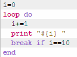
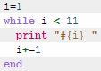
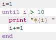
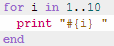
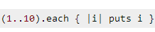
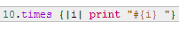

What is the right loop/iterator to use?
Magda Ang
June 9th, 2014
Ways to loop in Ruby
Ruby has a lot of different ways to execute the same block of code a specified number of times. We have read about loop, while, until, for, each, and times, we have used them in some exercises and challenges so far, but I still end up using the same one over and over again. Let's review the different ways to loop over stuff in Ruby. As an example, we want to print numbers from 1 to 10.
- Loop method
- While Loop
- Until Loop
- For LoopLoop method
- Each Iterator
- Times Iterator
Is the simplest way to loop in Ruby. Ruby provides us with all the loop termination and control keywords that allow us to make the loop method more useful, these keywords are break, next, and redo. Break allows us to exit a loop at any point.
Executes code while conditional is true.
The until loop is similar to the while loop but the logic is reversed, it executes code while conditional is false.
Using a for loop, we can execute code once for each element in an expression
Is the simplest iterator method and is perhaps the most useful, too. It will take a list of variables and run a block of statements for each of them.
It will allow you to execute a loop and perform an action (according to the block you write) x number of times. Is a very useful method when you know how many times you need to run a block of code. In this example, is not going to print 1-10, but 0-9. Since we are interested in how many times it iterates, this is ok.
As you can see, Ruby has a lot of ways to do something. Which one is the best? How to choose between one or the other? It depends on what you want to accomplish with your code, but remember that Ruby is more interested in accomodating the language to suit the programmer, not the other way around, so it's up to you really. I love short and clear code, so I would go for the loop that gives me that.
Sources
http://www.skorks.com/2009/09/a-wealth-of-ruby-loops-and-iterators/ http://www.tutorialspoint.com/ruby/ruby_loops.htm http://www.codecademy.com/courses/ruby-beginner-en-XYcN1/2/4